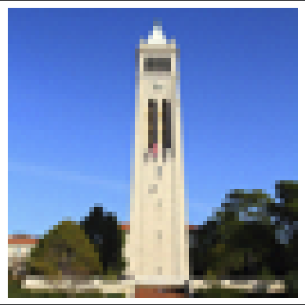

Diffusion and Flow Matching
CS180 Project 5 • Fall 2025
Introduction
In this project, I will explore using diffusion models for creating interesting artistic images and training a flow matching model to perform digit generation with the MNIST dataset.

Part A: The Diffusion Model
Visualizing Prompts With DeepFloyd
I'll be using the DeepFloyd diffusion model for the first part of this project. I'll visualize some prompts I chose here with number of steps 20 and 40.


Visualizing the Forward Process
We take the original image and then add some amount of random noise to the image using the equation:
Where:
- $x_t$ is the image at the current timestep $t$.
- $x_{t'}$ is the less noisy image at timestep $t'$ (where $t' < t$).
- $x_0$ is our current estimate of the clean image.
- $\bar{\alpha}_t$ represents the cumulative noise schedule up to step $t$.
- $\epsilon$ is the random noise.
The alpha values come from a noise schedule that are fixed before the model is trained. DeepFloyd models have 1000 time steps and each of them give an approximation of how much noise is in the image at a particular timestep.

Classical Denoising
Gaussian blurring is one of the most basic ways to denoise an image. We can take a look at the results here of applying a Gaussian blur to our noisy Campaniles.
You can see the results are pretty poor. It does reduce the intensity of the noise, but the noise is obviously still present, and the original image is now blurry as well.

Click and drag to compare noisy vs blurred.
One-Step Denoising
The idea with diffusion is to slowly denoise an image, going step by step, till we get to the final image. But, at intermediate steps the model can output its best guess of the noise in the current image based on the timestep t.
We'll use a pretrained diffusion model to denoise our image. It's a UNet that has been trained on a very large set of pairs of noisy and clean images. The model will predict the noise in the noisy image and we will remove that noise to get an estimate of the image.
We'll remove the noise using the following equation:
Where:
- $x_t$ is the image at the current timestep $t$.
- $x_{t'}$ is the less noisy image at timestep $t'$ (where $t' < t$).
- $x_0$ is our current estimate of the clean image.
- $\bar{\alpha}_t$ represents the cumulative noise schedule up to step $t$.
- $\epsilon$ is the random noise.
Next, we'll look at one-step denoising the Campanile at a few different noise levels. The model was trained with text conditioning so we'll need a text prompt embedding. We'll use 'a high quality photo.'
The model gets farther and farther away from the true image at higher noise levels, but it still gets pretty close despite much of the image being noise.


Iterative Denoising
Now, we'll use the model to do iterative diffusion by taking steps of size 30. We could do steps of 1, but in practice this is overkill and is computationally wasteful.
We can see how the Campanile starts to emerge as we take more and more time steps. It doesn't look quite like the original image, but it gets close, and it's much more detailed than the one-step denoise.


Diffusion Model Sampling
Now, instead of passing in a timestep that is already progressed and a natural image that has been noised, we will pass in pure noise. We start at the last time step and slowly move to smaller timesteps t'.
We will use a prompt of "a high quality photo" so it will largely be random image generation.

Classifier Free Guidance (CFG)
Previously, we used "a high quality photo" as a "null" condition. This time, we'll use the actual null "" condition for unconditional guidance and "a high quality photo" for conditional guidance.
Our "a high quality photo" prompt now becomes a condition to create actual conditional noise. The result is images that look far more real.

Image-to-image Translation
Here, we're going to noise our original Campanile image and run our classifier free iterative denoiser at different starting timesteps: [1, 3, 5, 7, 10, 20].
The idea here being that we'll see how much our model generates new features when it thinks it is at higher noise levels and has to go through more steps. Having more of these timesteps forces the model to be more creative.
I've used an image of an ocean and a waterfall for my other two images. They both have a tendency to predict a human at higher timesteps values but gradually remove them from the image.


Editing Hand-Drawn and Web Images
Now, we'll see what happens when we use less realistic images with DeepFloyd in the same way as above. I'm using the Mona Lisa as my painted web image, and then two of my own hand drawn images.


Inpainting
We are going to run the diffusion denoising loop as always, but at every step, we force the image to have the same image as the original where the mask is 0. This allows us to keep a photo the same but generate a new image in a specific spot.


Using the Custom Mask
Applying the custom mask on the Campanile, the Ocean, and the Waterfall.



Text-Conditional Image-to-image Translation
Our model was trained with text conditioning. I'm going to guide our projection with a text prompt now to end up with a combination of our actual image and our text prompt.
Starting with the Campanile and a "Rocket Ship" prompt. Followed by an image of an ocean and "Rocket Ship", and finally the waterfall image with prompt 'A portrait of a wizard with a long white beard wearing a dark pointed hat.'


Visual Anagrams
Now we'll run classifier free guidance on two different prompts but combine them into one image. We will take random noise, run the model on it to get a noise estimate, then we'll turn the random noise image upside down and run our second prompt on it.
We'll get two noise estimates, we'll unflip the flipped noise and average our two noises together. This will be our noise estimate for the next iteration of the image. In the end, this will result in visual anagram images where looking at the image upside down will show you something different than the right way up.


Hybrid Images
We can do a similar thing as above to create hybrid images. We take our current image, use a low pass filter to take out the high frequencies, and then use one of our prompts with CFG. Next we take that same image, use a high pass filter, take the other prompt and use CFG.
We add up their noise estimates to create the next image, and repeat. We'll end up with a hybrid image that looks like one thing up close, and another when viewed from afar.
I did this procedure on a high pass dog and a low pass skull. High pass snowy mountain village, low pass campfire, and finally a high pass wizard and a low pass snowy mountain.


Part B: Training a Flow Matching Model
That was a fun tour through using the DeepFloyd diffusion model to generate interesting images. Now I'll switch gears to training a diffusion flow matching model on the classic MNIST dataset.
Noising an Image
The fundamental component of any diffusion or flow matching model is the random noising of an image. Here, we'll visualize noising a digit at different sigma values. We'll use image pairs of noised images and clean images to train a Single-Step Denoising UNet.

Training our Denoiser
We will train our denoiser with a sigma value of 0.5 being applied to clean images.
After just one epoch of training, results already look quite good. There is a bit of noise near the edges of the digits, but it's very obvious what the digit is. Looking at the loss curve, we see that within the first 50-100 iterations, loss is already at around 0.02 and very slowly creeps lower over time.


Testing our Denoiser On Out of Distribution Noise Levels
We only trained our denoiser on a sigma value of 0.5. So it stands to reason it may not perform as well if we test it out of distribution.
Here we see the results on a variety of different sigma values. It performs well on lower sigma values, but on the higher sigma values the results fall apart a bit. It still generally is able to show us what the original digit was, but there is a good amount of noise at a sigma value of 1.

Denoising Pure Noise
If we now try to train a one-step denoiser on pure noise images, we see the drawbacks of using this model architecture.
Instead, it predicts the same sort of noisy cloud to try to get its training loss down because it generally knows there's a black background and a white digit in the center. It basically predicts an average of all the digits. In doing so, it fails to reconstruct any digit.


Training a Flow Matching Model
Our one step denoiser had obvious problems when it came to image generation, so we need to look at a new approach. We'll now try iteratively denoising an image by training a UNet model to predict the flow from noisy data to clean data. We are essentially training a vector field for moving noisy images to clean images.
Our fundamental algorithm looks like the following:
Where:
- $x_t$ is the image at the current timestep $t$.
- $x_0$ is the noisy image.
- $x_1$ is the true image.
We'll take our gradient descent step to minimize the difference between $x_1$ - $x_0$, so the actual difference, and the UNet prediction of the difference based on our noised image x_t and the timestep.
Our model trains quite quickly here. Epoch 1 starts to look faintly like digits, but largely still incomprehensible. By epoch 5, true digits start to emerge. By epoch 10, it's closer to 40-50% of images that look like clean digits.


Drag the sliders to compare early training (Epoch 1) against later epochs. Note how the digits become sharper and more defined by Epoch 10.
Adding Class-Conditioning to UNet
To further improve results, we can condition the UNet on classes as well using a one-hot encoding. However, we'd still like our model to work without being given a class, so we implement dropout. 10% of the time, the class conditioning vector is dropped by setting it to zero.
We can see results immediately improve with this addition. Epoch 1 already displays legible digits, and epoch 10 has beautifully generated images with few flaws. I tested training the UNet with and without a learning scheduler and results were practically identical.


Both scheduler and non-scheduler images look just like digits, but the scheduler seems to make the digits thinner.